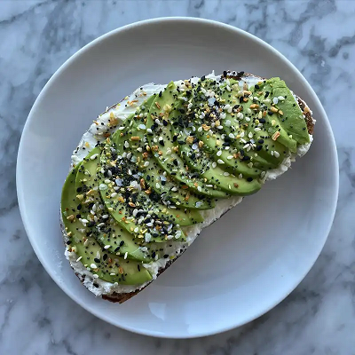

Spicy Goat Cheese Avocado Toast

Description
This is a simple, yet delicious avocado toast recipe that doesn't take too
long to prepare.
Ingredients
(Serves 1)
- 1 slice of Sourdough Bread
- 1/2 of an avocado
- 3 tbsp fresh goat cheese
- 1 tbsp Tobasco Habanero or hot sauce of your choice
Steps
- Toast Sourdough bread in toaster or air fryer at 370° for 5 minutes
- While bread is toasting, slice avocado lengthwise and set aside
- Add goat cheese and hot sauce to a small bowl, combine, and set aside
- After the bread is done toasting, remove from the toaster
- Spread goat cheese on toast, top with all the sliced avocado, and plate
- Enjoy!